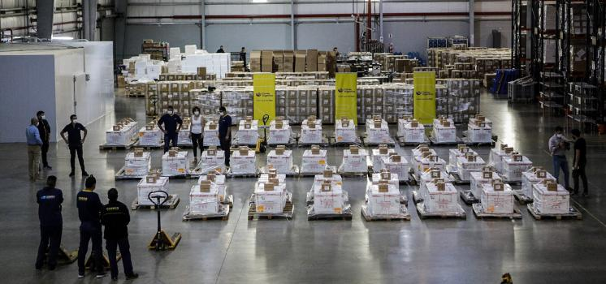

Más de 50 vehículos fueron afectados al operativo.
El primer lote de vacunas Sputnik V llegó esta mañana a la Planta Logística de Tortuguitas del Correo Oficial de la República Argentina S.A. y seguidamente se inició el proceso de distribución de las dosis a los hospitales de la Provincia de Buenos Aires.
Alrededor de las 8:00 llegó el primer lote de Sputnik V a la Planta Logística y los trabajadores de Correo comenzaron su tarea: descargar cada uno de los 107 pallets con conservadoras de frío de 60L de capacidad refrigeradas a una temperatura inferior a -18°C, gracias a una combinación de placas eutécticas y hielo seco.
Es importante aclarar que cada una de estas conservadoras lleva un dispositivo DataLogger que permite certificar que se han mantenido las condiciones de temperatura adecuadas durante el proceso de logística.
La presidenta del Correo Oficial, Vanesa Piesciorovski, supervisó el operativo y explicó que se decidió recibir las dosis de Sputnik V en la Planta de Tortuguitas porque esa sede cuenta con un sistema de “temperatura controlada” y una cámara frigorífica para mantener la cadena de frío de las vacunas.
“Para los trabajadores y trabajadoras del Correo Argentino es una emoción poder transportar y distribuir este insumo tan esperado y que los primeros en recibirla sean los médicos y enfermeros que se encuentran en la trinchera en esta lucha contra el virus”, sostuvo al tiempo que detalló que más de 80 empleados y 50 vehículos del correo fueron afectados al operativo.